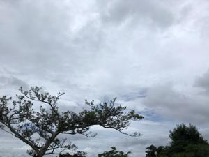
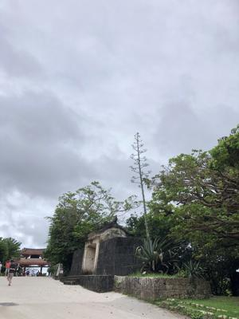
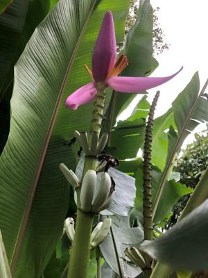
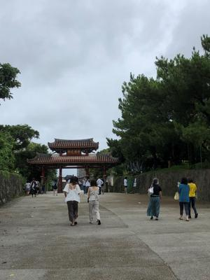
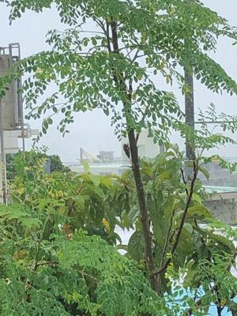

うるがいの話 ある日
最新: 令和４年の台風４号【うるがいの話 ある日】とは 一日だけのプログです
『うるがいの話』の最新一日だけのプログで、通信料が少なく経済的だ。カニの画像をクリックすると全ての日付が載る『うるがいの話』サイトを表示します
|
|
【うるがいの話】 うるがい(ｳﾙｶﾞｲ urugai)とは、『もずくがに』の名前でとても大きくなります。 |
|---|---|
|
|
【カミマヤーの話】 猫のことを方言でマヤーといいます。カミマヤー（kamimayaa）とは、神の猫のことです。 |
|
【たながぁの音楽】 たながぁ（ﾀﾅｶﾞｰ tanagaa）とは手長えびのことで、何種類かあり大きいのは車 エビぐらいになります。 |

|
【ぶながぁの話】 ぶながぁ(ﾌﾞﾅｶﾞｰ bunagaa)とは、赤い髪の毛、赤い身体、そして身長は１ｍ２０ｃｍ ぐらい、川の蟹を食べているの目撃された。場所は沖縄県国頭郡大宜味村のと ある村僕の隣近所に住んでいる爺さんから、聞いた話です。 |
|
|
【ギーマの話】 ギーマ(giima)とは、山原の里山に咲くスズランに似た、 花を付けます。実は食べられます、 気が付くと口の周りが紫になっています。 |
2022年07月03日 (日）令和４年の台風４号
16:58
   
まったく、肩透かしの台風だった。雨が降る前にと、昼２時頃首里城公園へ行
くと、台風なのに観光客は大勢いた。そして夕方になると大雨が降る、観光客
には残念な天候である。公園で会った観光客は、どうしているのだろうと思っ
た。雨は降れど風は、ほとんど感じられなかった。

ＡＵ通信障害は、『西日本エリアは11:00ごろに復旧作業終了しました。』と
サイトにあったが、私とヨメのスマホはまだ利用できない。『流量制御などの
対処を講じているため、ご利用しづらい状況が継続しております。本格再開時
間は別途決定次第、ご案内いたします。』と説明があるが、復旧とは最終利用
者のすべてが、利用出来て初めて復旧と言うべきだと思うが。姑息な説明！。
でも、復旧対応している現場の人達は大変だろうな・・・・。今月の３連休は
システムの切替を、計画している所があると思う、今回の障害で当事者たちへ
ハネ（影響）ると思う。現場私のスマホは、１６時４２分に復旧した。
１６時４４分 ビットコインの総資産 ￥７、４９２↓